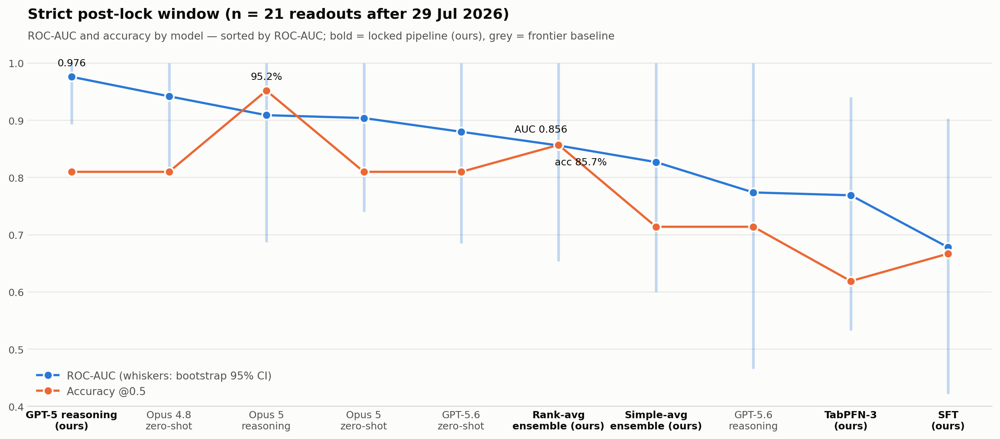

Prospective binary readouts from the cohort — trials whose primary outcome (success or fail) became public on or after 1 July 2026, adjudicated by spin-aware review roughly every two weeks. Each row links its primary evidence and carries our adjudication note; the ✓/✗ column scores the locked baseline prediction. Disclosures that are mixed, strategic terminations, or not yet establishable at the primary endpoint are excluded from this ledger and consolidated in the paper.

Raw close-to-close moves of the most exposed listed company, not market-adjusted. Baseline = last close before the announcement; D0 = announcement day. After-hours announcements show up on D+1 (e.g. selinexor). Trials sharing one corporate disclosure share the same reaction (e.g. the two Sionna programs). Large-cap sponsors dilute single-trial effects. Prices: Yahoo Finance daily closes.